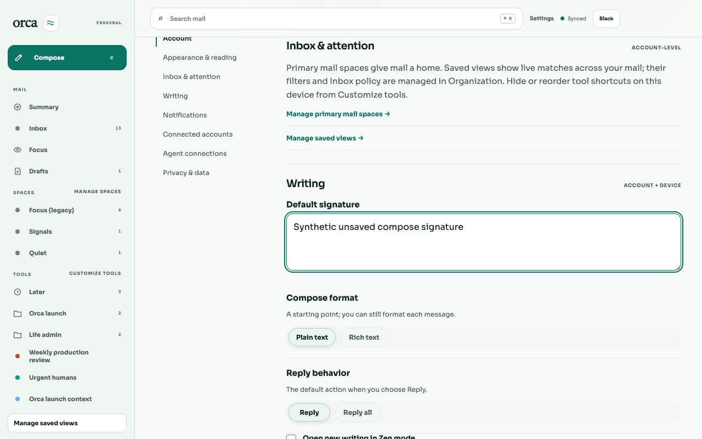
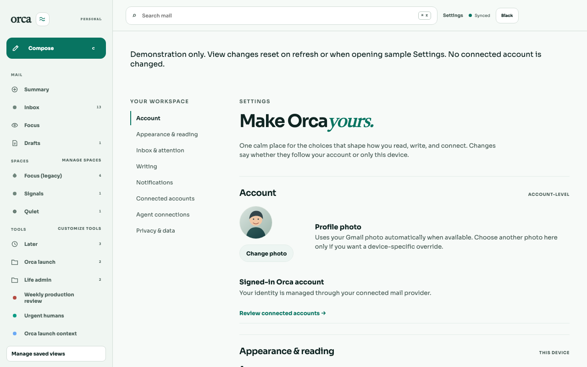
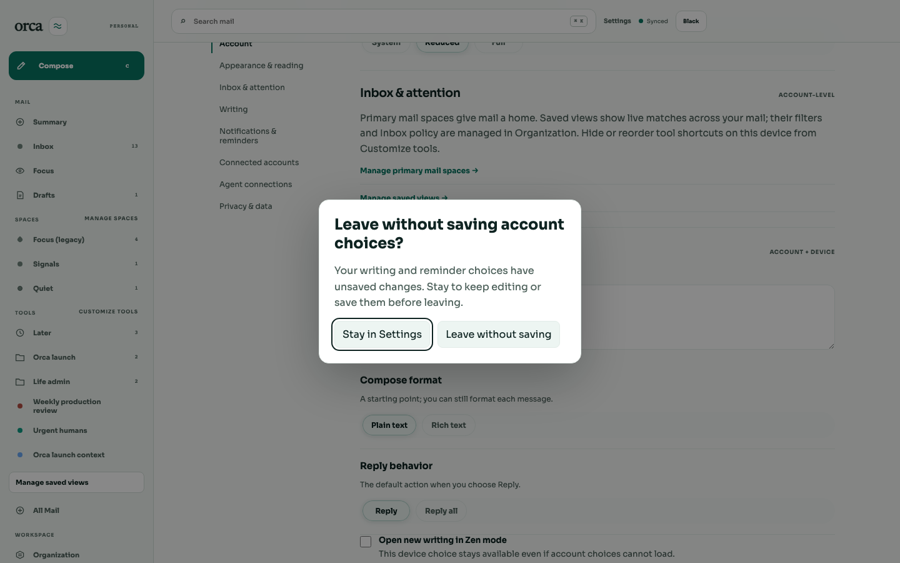
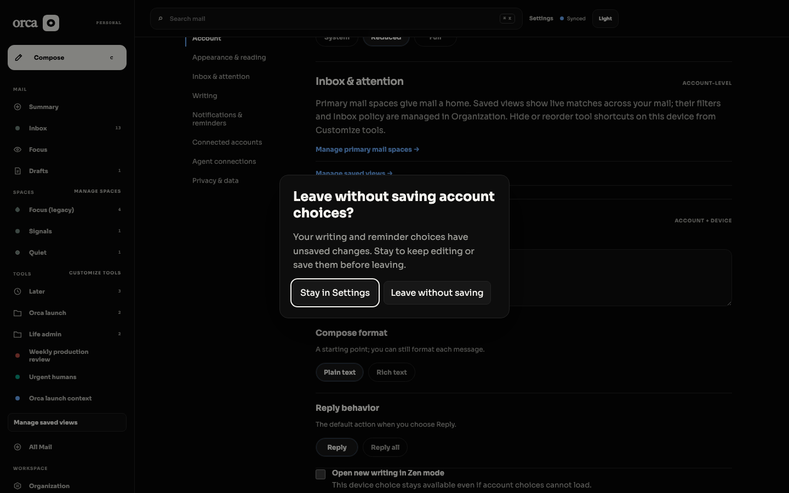
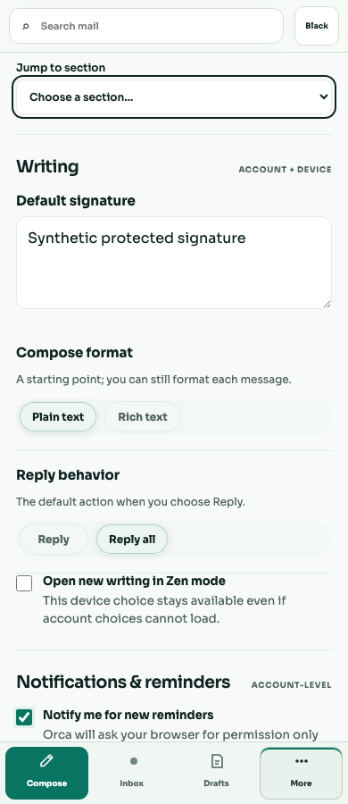
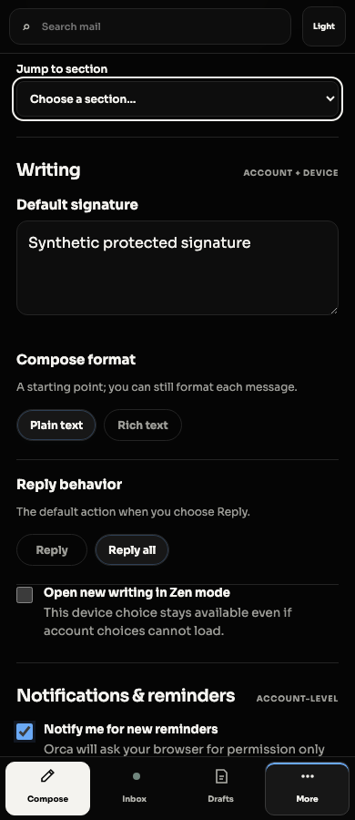
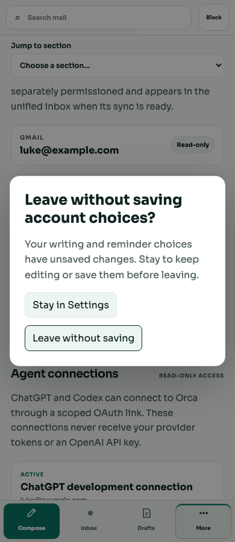
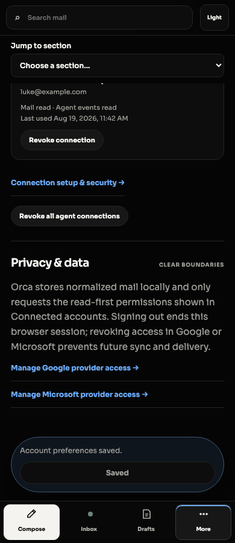

Actual browser captures from synthetic web Settings. Before: 0/6 protected edits. Candidate: 6/6. Demo matrix: 2 themes × 4 widths; 32 asserted mobile section landings. See README for exact provenance and reproducible actions.







